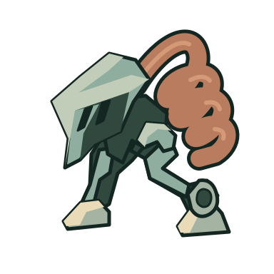
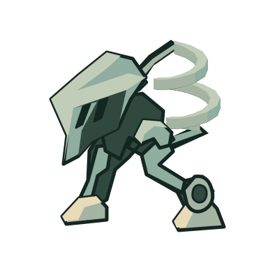

Original: held material

20px source-density fixture; camera/crowd acceptance unclaimed.
Optional manual source derivative. Original hold stays preserved. No runtime adoption or camera/crowd acceptance.
Brief and temporary import recipe · Exact parent, change and self-review · Matched comparison

20px source-density fixture; camera/crowd acceptance unclaimed.

20px source-density fixture; camera/crowd acceptance unclaimed.